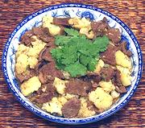

|
Beef with CauliflowerThailand | ||||
| Serves: Effort: Sched: DoAhead: |
2 main ** 45 min Yes |
Quick to make and surprisingly delicious, this dish will satisfy both beef and vegetable enthusiasts. This dish definitely wants the Chili Vinegar Sauce to finish the flavor so don't omit it. | |||
|
1 8 8 ----- 1 2 1 ----- 2 1/3 ------ |
# oz cl --- T T T --- T c --- |
Cauliflower (1) Beef lean Garlic -- Sauce Oyster Sauce Yellow Bean (2) Fish Sauce --------- Oil Stock -- Serve with -- Jasmine rice, Chili Vinegar (3) |
Prep - (20 min)
|